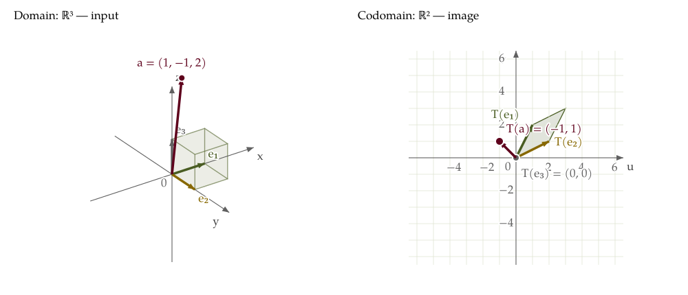

From a 3D input to a 2D image
Predict: If only the z-coordinate changes, will the output move? What should the third matrix column tell us?
T: ℝ³ → ℝ², T(x, y, z) = (x + 2y, 2x + y)
A = columns = images of e₁, e₂, e₃
Domain: ℝ³ — input (x, y, z)
Transparent cube: 0 ≤ x, y, z ≤ 1.
Codomain: ℝ² — output (u, v)
Cube image: corners (0, 0), (1, 2), (3, 3), (2, 1).
e₁ ↦ (1, 2): column 1
e₂ ↦ (2, 1): column 2
e₃ ↦ (0, 0): column 3
T(1, −1, 2) = (−1, 1)
The three basis arrows are sent to the three columns of A. Press Play to follow each image.
Rotate the input view
Drag the 3D input plot, focus it and use the arrow keys, or use these sliders. The output remains a 2D coordinate plane.

Read the guided explanation
- T(e₁) = (1, 2), T(e₂) = (2, 1), and T(e₃) = (0, 0). These are the columns of A, matched by label and color.
- For any input, T(x, y, z) = x(1, 2) + y(2, 1) + z(0, 0). In particular, T(1, −1, 2) = (−1, 1).
- The inputs (x, y, −2), (x, y, 0), and (x, y, 2) all map to (x + 2y, 2x + y). Varying z moves along a vertical line in the domain and leaves the output fixed.
Which different inputs produce the same output? What information does this transformation lose?